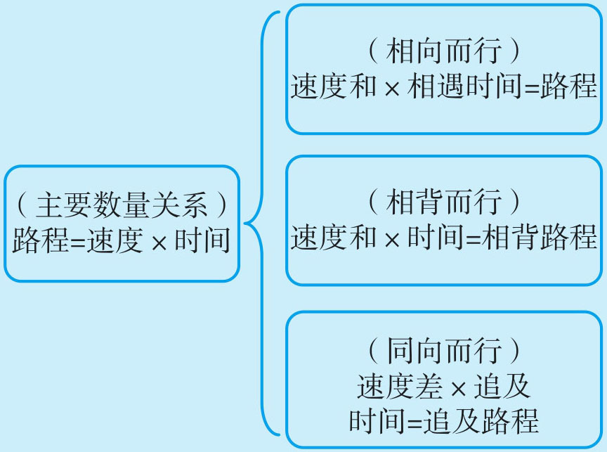
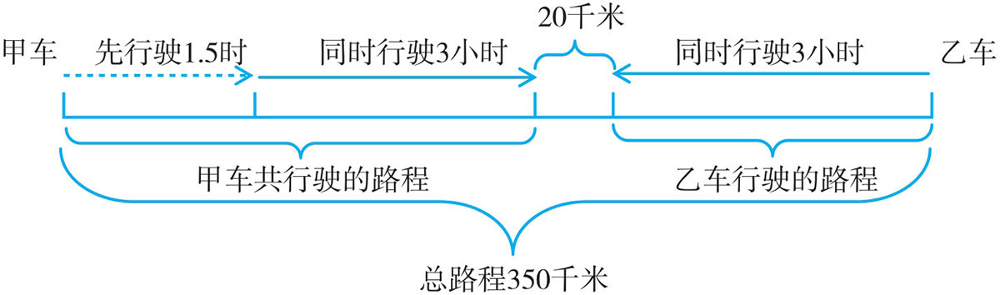
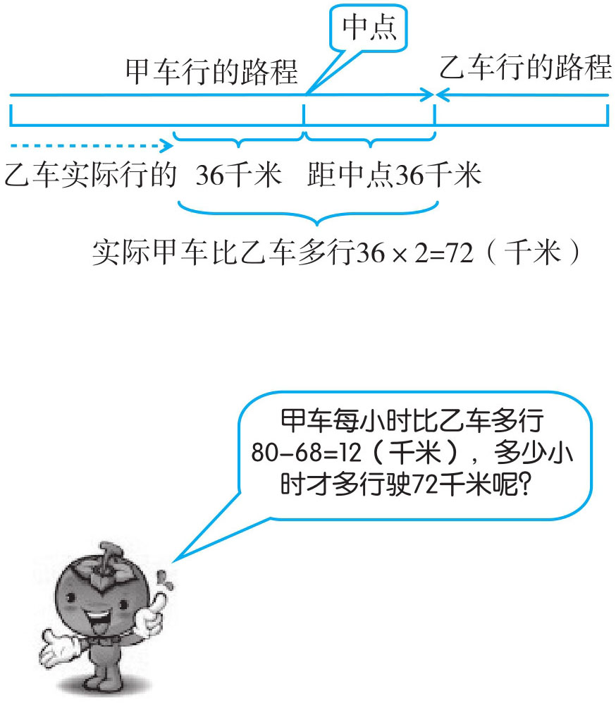
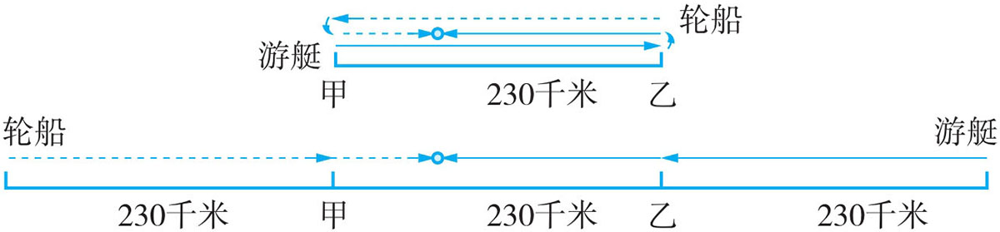
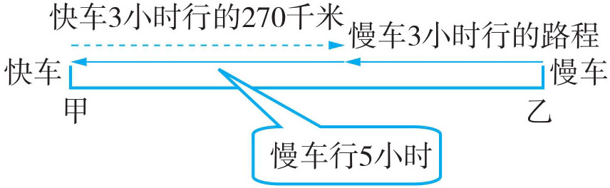
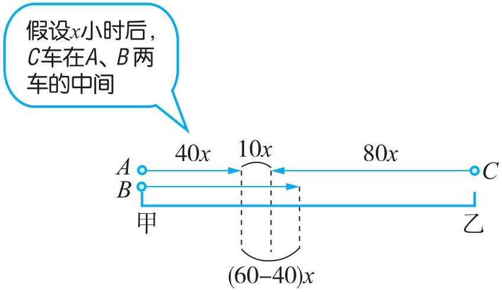

行程问题，是专门研究物体运动的速度、时间和路程三者之间关系的应用题。相遇问题严格说是行程问题中的一种类型。但在实际相遇问题教学中它拓展到相背、同向、相距等一些数学问题。

例1 南北两地间有一条公路长350千米，甲车以40千米／时的速度从南到北行驶，1.5小时后，乙车从北到南行驶，再经过3小时两车还相距20千米。乙车每小时行驶多少千米？

甲车行的路程：(1.5+3)×40=180（千米）；
乙车行的路程：350-180-20=150（千米）；
乙每小时行的路程：150÷3=50（千米）；
答：乙车每小时行50千米。
例2 甲、乙两车同时从两地相向而行，甲车每小时行80千米，乙车每小时行68千米。相遇时它们距全程中点36千米。两地相距多少千米？

相遇的时间：36×2÷(80-68)=72÷12=6（小时）
两地的路程：(80+68)×6=888（千米）
答：两地相距888千米。
例3 甲、乙两港相距230千米，一艘游艇以每小时60千米的速度由甲港开往乙港，同时，一艘轮船以每小时55千米的速度由乙港开往甲港（它们在同一条航道上），游艇和轮船各自到达目的地后立即返回，则它们第二次相遇要多少小时？
求第一次相遇的时间，我们是用总路程与速度和相除，其实求第二次相遇的时间也是总路程与速度和相除。可以想象成游艇与轮船从更远的两港同时相向而行，没有中间的第一次相遇，而总路程不变。关键是这里的总路程不是230千米，而是3个230千米。

230×3÷(60+55)=690÷115=6（小时）
答：它们第二次相遇要6小时。
例4 一辆快车和一辆慢车同时从甲、乙两地相对而行，快车3小时行驶270千米，正好与慢车相遇，相遇后慢车继续行驶了5小时到达甲地。问：甲、乙两地相距多少千米？
两车同时出发，快车行了3小时与慢车相遇，说明慢车也行了3小时。相遇后慢车又行了5小时到达甲地，慢车5小时行的路程就是快车3小时行的270千米，因此，慢车的每小时行270÷5=54（千米），慢车用的总时间是3+5=8（小时），由此可知甲乙两地相距54×8=432（千米）。

270÷5×(3+5)=54×8=432（千米）
答：甲乙两地相距432千米。
例5 有A 、B 、C 三辆小汽车，它们的速度分别是40千米／时、60千米／时、80千米／时，A 、B 两车都在甲地，C 车在乙地。甲、乙两地的距离是520千米，如果它们同时出发相向而行，多少小时后C 车在A 、B 两车的中间？
A 、B 两车是同向行驶，B 车的速度快，每小时与A 车相距60-40=20（千米）。A 、B 两车与C 车相向而行，要求C 车在A 、B 两车的中间，也即是在它们相差的路程的中间。由此可推出，A 、C 两车行的路程+A 、B 相差路程的一半=520千米，根据这个等量关系可以列出方程，再求解。

解：设x 小时后C 车在A 、B 两车的中间。
40x +(60-40)x ÷2+80x =520
40x +10x +80x =520
130x =520
x =4
答：4小时后C 车在A 、B 两车的中间。
1．两艘轮船同时从甲、乙两港相对出发，从甲港开出的轮船每小时行50千米，乙港开出的轮船每小时行驶64千米。7小时后，两艘轮船还相距28千米。问：求甲、乙两港相距多少千米？
2．聂艳、陈敏同时从广场东、西两头相向而行，3分钟后，聂艳在过中点18米的地方与陈敏相遇。聂艳每分钟走55米，那广场东、西两头相距多少米？
3．甲、乙两列火车上午9时分别从甲、乙两地出发，下午3时在一个车站相遇，甲车每小时行75千米，乙车3小时行驶240千米，问：甲、乙两地的铁路长多少千米？
4．两地相距450千米，甲、乙两车同时出发，经过3小时相遇，乙的速度是甲的速度的1.5倍。问：甲、乙两车的速度各是多少？
5．一辆慢车和一辆快车同时从A 、B 两地相对而行，慢车4小时行驶240千米，正好与快车相遇，相遇后快车继续行驶了3小时到达A 地。问：A 、B 两地相距多少千米？
6．A
、B
两地相距944千米，快、慢两车同时从A
、B
两地相向开出，快车每小时行62千米，两车在离中点24千米处相遇。问：慢车每小时行多少千米？
7．甲汽车每小时行驶64千米，乙汽车每小时行驶82千米，两车同时从A
地向B
地行驶，2小时后，乙汽车回原地取东西，并在原地停留30分钟后追甲汽车。问：多少小时后能追上甲汽车？
8．有两只宠物狗从A
、B
两地同时出发，不断往返在两地间。现已知一只宠物狗的速度为105米／分钟，另一只宠物狗的速度为120米／分钟，且经过12分钟后两只宠物狗第二次相遇。问：A
、B
两地相距多少米？
9．甲、乙、丙三人沿湖边散步，同时从湖边一固定点出发。甲按顺时针方向行走，乙与丙按逆时针方向行走，乙、丙每分钟分别行80米、90米。甲走40分钟与丙相遇，又走了2分钟与乙相遇。那么绕湖一周的路程为多少米？